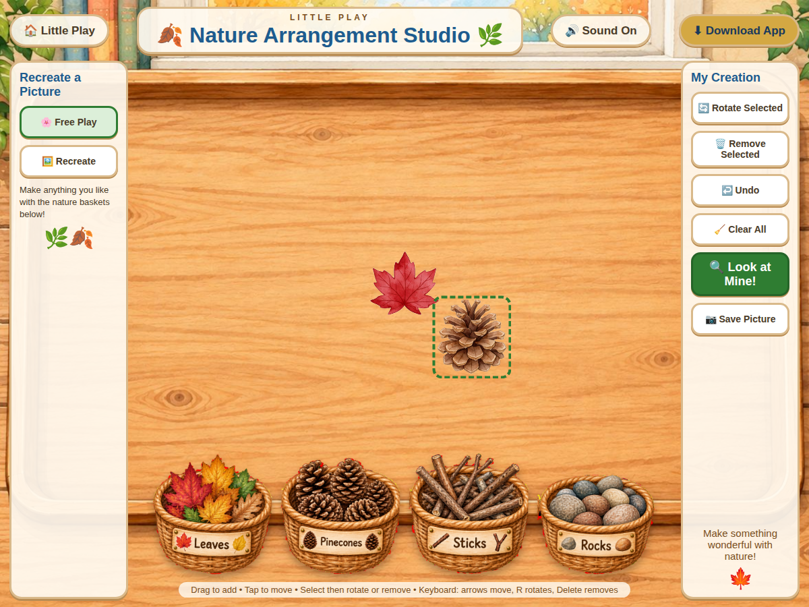

Little Play
Nature Arrangement Studio
Arrange nature pieces freely or recreate one of the example pictures.
$2.99
Digital product. After checkout, use the access link on the confirmation page. Keep your purchase confirmation.
Ways to use it
- Explore spatial arrangement and visual composition.
- Compare an arrangement with a model.
How to play
- Choose Free Play or Recreate.
- Drag pieces from the nature baskets onto the work area.
- Select a piece to move, rotate or remove it.
Practical details
Includes undo, clear and Save Picture controls. Keyboard controls include arrows to move, R to rotate and Delete to remove.
Explore together
Invite children to explain what they notice and talk through their choices.